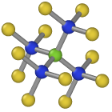
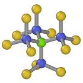
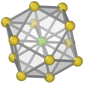
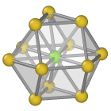

| Table of Contents | Identify diamond structure | Up |
|---|---|---|
| Prev | Modifiers | Next |
| Table of Contents | Identify diamond structure | Up |
|---|---|---|
| Prev | Modifiers | Next |
This analysis modifier finds atoms that are arranged in a cubic or hexagonal diamond lattice. This structure identification method has been described in Appendix A of
Please cite this paper when you use this structure identification algorithm for diamond lattices in your work. A preprint is available here.
The algorithm analyzes the local environment of each atom up to the second neighbor shell to determine the local structural type.
The results are stored in the Structure Type particle property, with the type assigned to each atom encoded as an integer value:
| Type ID | Type name | Description |
|---|---|---|
| 0 | Other | An atom with unknown coordination structure, which doesn't belong to any of the classes below. |
| 1 | Cubic diamond | An atom having all of its first and second nearest neighbors positioned on cubic diamond lattice sites |
| 2 | Cubic diamond (1st neighbor) | An atom being a first neighbor of an atom that was classified as cubic diamond. Its four neighbors are positioned on lattice sites, but at least one of its second nearest neighbors is not. |
| 3 | Cubic diamond (2nd neighbor) | An atom being a second nearest neighbor of an atom that was classified as cubic diamond. The atom itself is positioned on a lattice site, but at least one of its neighbors is missing or is not positioned on a lattice site. |
| 4 | Hexagonal diamond | An atom having all of its first and second nearest neighbors positioned on hexagonal diamond lattice sites |
| 5 | Hexagonal diamond (1st neighbor) | An atom being a first neighbor of an atom that was classified as hexagonal diamond. Its four neighbors are positioned on lattice sites, but at least one of its second nearest neighbors is not. |
| 6 | Hexagonal diamond (2nd neighbor) | An atom being a second nearest neighbor of an atom that was classified as hexagonal diamond. The atom itself is positioned on a lattice site, but at least one of its neighbors is missing or is not positioned on a lattice site. |
The Use only selected particles option restricts the analysis to the currently selected atoms. If this option is activated, unselected atoms will be ignored (as if they did not exist) and will be assigned the structure type "Other". This option can be useful if you want to identify defects in a crystal with a non-diamond structure, but which has a sublattice that is a diamond lattice (and you do not want to delete atoms belonging to the other sublattice(s) for some reason).
| Central atom (green), nearest neighbors (blue), and neighbors of neighbors (yellow). | |
|

|

|
| Cubic diamond | Hexagonal diamond |
|

|

|
| FCC | HCP |
To classify a central atom, this structure identification method takes into account second nearest neighbors to discriminate between cubic and hexagonal diamond structures. The method can be considered an extended version of the popular common neighbor analysis (CNA), which is typically used to identify FCC, HCP, or BCC structures. However, the conventional CNA is not suited for diamond structures, because nearest neighbor atoms don't have common neighbors, and the second and third nearest neighbor shells are not well separated.
These problems are solved as follows: First, the nearest neighbors of an atom are identified. Then, for each of these four neighbors, their respective nearest neighbors are identified. This yields the list of second nearest neighbors of the central atom. Finally, the CNA fingerprint is computed for these 12 second nearest neighbors and the central atom. If they are arranged on a FCC lattice, then the central atom is classified as cubic diamond. If they form a HCP structure, then the central atom is marked as an hexagonal diamond atom.
Further details can be found in the paper.